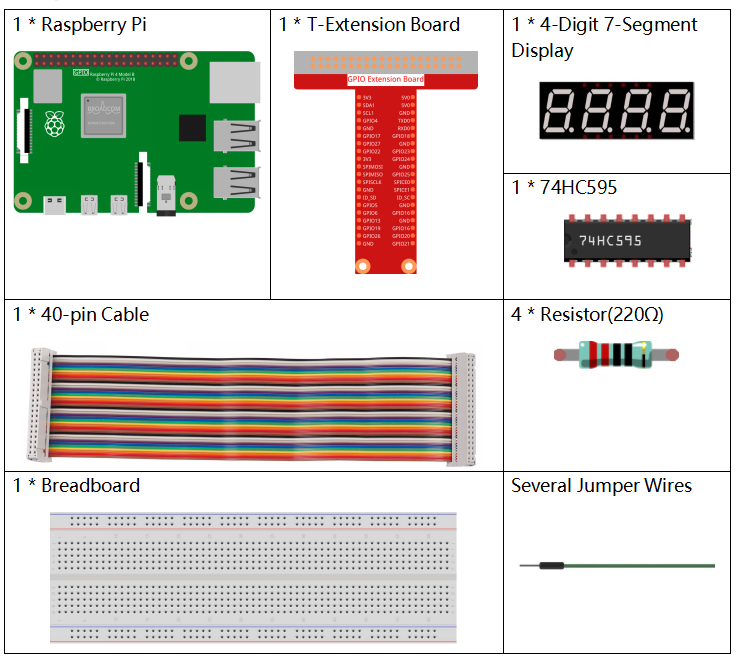
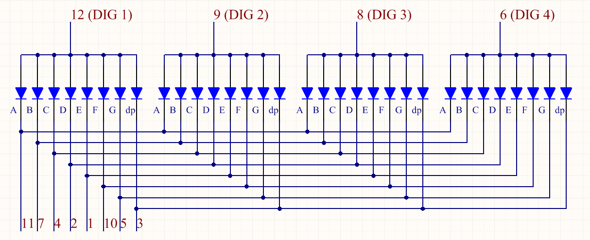

Note
Bonjour et bienvenue dans la communauté SunFounder Raspberry Pi & Arduino & ESP32 Enthusiasts sur Facebook ! Plongez plus profondément dans l’univers de Raspberry Pi, Arduino et ESP32 avec d’autres passionnés.
Pourquoi nous rejoindre ?
Support d’experts : Résolvez vos problèmes post-vente et techniques avec l’aide de notre communauté et de notre équipe.
Apprendre et partager : Échangez des conseils et des tutoriels pour améliorer vos compétences.
Aperçus exclusifs : Accédez en avant-première aux annonces de nouveaux produits.
Réductions spéciales : Profitez de réductions exclusives sur nos derniers produits.
Promotions festives et tirages au sort : Participez à des promotions spéciales et des giveaways.
üëâ Pr√™t √† explorer et cr√©er avec nous ? Cliquez sur [Ici] et rejoignez-nous d√®s aujourd‚Äôhui !
1.1.5 4-Digit 7-Segment Display
Introduction
Ensuite, suivez-moi pour essayer de contrôler l’afficheur 7 segments à 4 chiffres.
Composants
Principe
Afficheur 7 segments à 4 chiffres
L’afficheur 7 segments à 4 chiffres se compose de quatre affichages à 7 segments fonctionnant ensemble.

L’afficheur 7 segments à 4 chiffres fonctionne indépendamment. Il utilise le principe de la persistance rétinienne pour afficher rapidement les caractères de chaque segment en boucle afin de former des chaînes continues.
Par exemple, lorsque « 1234 » est affiché, « 1 » est d’abord montré sur le premier segment, les autres ne sont pas affichés. Après un court instant, le deuxième segment affiche « 2 », et ainsi de suite. Le processus est très rapide (environ 5ms), et en raison de l’effet de rémanence optique et de la persistance rétinienne, nous voyons les quatre chiffres en même temps.
Codes d’affichage
Pour mieux comprendre comment les affichages à 7 segments (anode commune) affichent les chiffres, nous avons dressé le tableau suivant. Les nombres représentent les chiffres 0-F affichés sur l’afficheur 7 segments ; (DP) GFEDCBA indique quels segments LED sont activés. Par exemple, 11000000 signifie que DP et G sont activés, tandis que les autres sont désactivés, ce qui correspond au chiffre « 0 » sur l’afficheur. Le code HEX correspond au numéro en hexadécimal.

Schéma de câblage
T-Board Name |
physical |
wiringPi |
BCM |
GPIO17 |
Pin 11 |
0 |
17 |
GPIO27 |
Pin 13 |
2 |
27 |
GPIO22 |
Pin 15 |
3 |
22 |
SPIMOSI |
Pin 19 |
12 |
10 |
GPIO18 |
Pin 12 |
1 |
18 |
GPIO23 |
Pin 16 |
4 |
23 |
GPIO24 |
Pin 18 |
5 |
24 |

Procédures expérimentales
Étape 1 : Construisez le circuit.

Pour les utilisateurs du langage C
Étape 2 : Accédez au dossier du code.
cd ~/davinci-kit-for-raspberry-pi/c/1.1.5/
Étape 3 : Compilez le code.
gcc 1.1.5_4-Digit.c -lwiringPi
Étape 4 : Exécutez le fichier compilé.
sudo ./a.out
Après l’exécution du code, le programme effectue un comptage, augmentant de 1 chaque seconde, et l’afficheur 7 segments à 4 chiffres affiche le décompte.
Note
Si cela ne fonctionne pas après l’exécution, ou s’il y a un message d’erreur : « wiringPi.h: Aucun fichier ou répertoire de ce type », veuillez consulter C code is not working?.
Code
#include <wiringPi.h>
#include <stdio.h>
#include <wiringShift.h>
#include <signal.h>
#include <unistd.h>
#define SDI 5
#define RCLK 4
#define SRCLK 1
const int placePin[] = {12, 3, 2, 0};
unsigned char number[] = {0xc0, 0xf9, 0xa4, 0xb0, 0x99, 0x92, 0x82, 0xf8, 0x80, 0x90};
int counter = 0;
void pickDigit(int digit)
{
for (int i = 0; i < 4; i++)
{
digitalWrite(placePin[i], 0);
}
digitalWrite(placePin[digit], 1);
}
void hc595_shift(int8_t data)
{
int i;
for (i = 0; i < 8; i++)
{
digitalWrite(SDI, 0x80 & (data << i));
digitalWrite(SRCLK, 1);
delayMicroseconds(1);
digitalWrite(SRCLK, 0);
}
digitalWrite(RCLK, 1);
delayMicroseconds(1);
digitalWrite(RCLK, 0);
}
void clearDisplay()
{
int i;
for (i = 0; i < 8; i++)
{
digitalWrite(SDI, 1);
digitalWrite(SRCLK, 1);
delayMicroseconds(1);
digitalWrite(SRCLK, 0);
}
digitalWrite(RCLK, 1);
delayMicroseconds(1);
digitalWrite(RCLK, 0);
}
void loop()
{
while(1){
clearDisplay();
pickDigit(0);
hc595_shift(number[counter % 10]);
clearDisplay();
pickDigit(1);
hc595_shift(number[counter % 100 / 10]);
clearDisplay();
pickDigit(2);
hc595_shift(number[counter % 1000 / 100]);
clearDisplay();
pickDigit(3);
hc595_shift(number[counter % 10000 / 1000]);
}
}
void timer(int timer1)
{
if (timer1 == SIGALRM)
{
counter++;
alarm(1);
printf("%d\n", counter);
}
}
void main(void)
{
if (wiringPiSetup() == -1)
{
printf("setup wiringPi failed !");
return;
}
pinMode(SDI, OUTPUT);
pinMode(RCLK, OUTPUT);
pinMode(SRCLK, OUTPUT);
for (int i = 0; i < 4; i++)
{
pinMode(placePin[i], OUTPUT);
digitalWrite(placePin[i], HIGH);
}
signal(SIGALRM, timer);
alarm(1);
loop();
}
Explication du Code
const int placePin[] = {12, 3, 2, 0};
Ces quatre broches contrôlent les anodes communes des quatre affichages à 7 segments.
unsigned char number[] = {0xc0, 0xf9, 0xa4, 0xb0, 0x99, 0x92, 0x82, 0xf8, 0x80, 0x90};
Un tableau de codes segmentés de 0 à 9 en hexadécimal (anode commune).
void pickDigit(int digit)
{
for (int i = 0; i < 4; i++)
{
digitalWrite(placePin[i], 0);
}
digitalWrite(placePin[digit], 1);
}
Sélectionnez la position de la valeur. Une seule position doit être activée à chaque fois. La position activée sera définie à un niveau haut.
void loop()
{
while(1){
clearDisplay();
pickDigit(0);
hc595_shift(number[counter % 10]);
clearDisplay();
pickDigit(1);
hc595_shift(number[counter % 100 / 10]);
clearDisplay();
pickDigit(2);
hc595_shift(number[counter % 1000 / 100]);
clearDisplay();
pickDigit(3);
hc595_shift(number[counter % 10000 / 1000]);
}
}
Cette fonction est utilisée pour définir le nombre affiché sur l’afficheur 7 segments à 4 chiffres.
clearDisplay(): écrit 11111111 pour éteindre les huit LED de l’afficheur 7 segments afin de vider le contenu affiché.pickDigit(0): sélectionne le quatrième segment 7 segments.hc595_shift(number[counter % 10]): le chiffre des unités du compteur s’affichera sur le quatrième segment.
signal(SIGALRM, timer);
C’est une fonction fournie par le système, dont le prototype est :
sig_t signal(int signum,sig_t handler);
Après l’exécution de signal(), une fois que le processus reçoit le signal correspondant (ici SIGALRM), il interrompt immédiatement la tâche en cours pour traiter la fonction définie (ici timer(sig)).
alarm(1);
C’est également une fonction fournie par le système. Le prototype du code est :
unsigned int alarm (unsigned int seconds);
Elle génère un signal SIGALRM après un certain nombre de secondes.
void timer(int timer1)
{
if (timer1 == SIGALRM)
{
counter++;
alarm(1);
printf("%d\n", counter);
}
}
Nous utilisons les fonctions ci-dessus pour implémenter la fonction de minuterie.
Après que alarm() génère le signal SIGALRM, la fonction timer est appelée. On ajoute 1 au compteur et la fonction alarm(1) est rappelée toutes les secondes.
Pour les utilisateurs de Python
Étape 2 : Accédez au dossier du code.
cd ~/davinci-kit-for-raspberry-pi/python/
Étape 3 : Exécutez le fichier.
sudo python3 1.1.5_4-Digit.py
Après l’exécution du code, le programme effectue un comptage qui augmente de 1 chaque seconde, et l’afficheur 4 chiffres affiche le décompte.
Code
Note
Vous pouvez Modifier/Réinitialiser/Copier/Exécuter/Arrêter le code ci-dessous. Mais avant cela, vous devez accéder au chemin source du code tel que davinci-kit-for-raspberry-pi/python.
import RPi.GPIO as GPIO
import time
import threading
SDI = 24
RCLK = 23
SRCLK = 18
placePin = (10, 22, 27, 17)
number = (0xc0, 0xf9, 0xa4, 0xb0, 0x99, 0x92, 0x82, 0xf8, 0x80, 0x90)
counter = 0
timer1 = 0
def clearDisplay():
for i in range(8):
GPIO.output(SDI, 1)
GPIO.output(SRCLK, GPIO.HIGH)
GPIO.output(SRCLK, GPIO.LOW)
GPIO.output(RCLK, GPIO.HIGH)
GPIO.output(RCLK, GPIO.LOW)
def hc595_shift(data):
for i in range(8):
GPIO.output(SDI, 0x80 & (data << i))
GPIO.output(SRCLK, GPIO.HIGH)
GPIO.output(SRCLK, GPIO.LOW)
GPIO.output(RCLK, GPIO.HIGH)
GPIO.output(RCLK, GPIO.LOW)
def pickDigit(digit):
for i in placePin:
GPIO.output(i,GPIO.LOW)
GPIO.output(placePin[digit], GPIO.HIGH)
def timer():
global counter
global timer1
timer1 = threading.Timer(1.0, timer)
timer1.start()
counter += 1
print("%d" % counter)
def loop():
global counter
while True:
clearDisplay()
pickDigit(0)
hc595_shift(number[counter % 10])
clearDisplay()
pickDigit(1)
hc595_shift(number[counter % 100//10])
clearDisplay()
pickDigit(2)
hc595_shift(number[counter % 1000//100])
clearDisplay()
pickDigit(3)
hc595_shift(number[counter % 10000//1000])
def setup():
GPIO.setmode(GPIO.BCM)
GPIO.setup(SDI, GPIO.OUT)
GPIO.setup(RCLK, GPIO.OUT)
GPIO.setup(SRCLK, GPIO.OUT)
for i in placePin:
GPIO.setup(i, GPIO.OUT)
global timer1
timer1 = threading.Timer(1.0, timer)
timer1.start()
def destroy(): # Lorsque "Ctrl+C" est pressé, la fonction est exécutée.
global timer1
GPIO.cleanup()
timer1.cancel() # annuler le minuteur
if __name__ == '__main__': # Le programme commence ici
setup()
try:
loop()
except KeyboardInterrupt:
destroy()
Explication du Code
placePin = (10, 22, 27, 17)
Ces quatre broches contrôlent les broches d’anode commune des écrans à sept segments à quatre chiffres.
number = (0xc0, 0xf9, 0xa4, 0xb0, 0x99, 0x92, 0x82, 0xf8, 0x80, 0x90)
Un tableau de codes segments de 0 à 9 en hexadécimal (anode commune).
def clearDisplay():
for i in range(8):
GPIO.output(SDI, 1)
GPIO.output(SRCLK, GPIO.HIGH)
GPIO.output(SRCLK, GPIO.LOW)
GPIO.output(RCLK, GPIO.HIGH)
GPIO.output(RCLK, GPIO.LOW)
Écrire « 1 » huit fois dans SDI, de sorte que les huit LEDs de l’afficheur à sept segments s’éteignent pour effacer le contenu affiché.
def pickDigit(digit):
for i in placePin:
GPIO.output(i,GPIO.LOW)
GPIO.output(placePin[digit], GPIO.HIGH)
Sélectionner la position de la valeur. Il ne doit y avoir qu’une seule position activée à chaque fois. La position activée sera mise à l’état haut.
def loop():
global counter
while True:
clearDisplay()
pickDigit(0)
hc595_shift(number[counter % 10])
clearDisplay()
pickDigit(1)
hc595_shift(number[counter % 100//10])
clearDisplay()
pickDigit(2)
hc595_shift(number[counter % 1000//100])
clearDisplay()
pickDigit(3)
hc595_shift(number[counter % 10000//1000])
Cette fonction sert à définir le nombre affiché sur l’écran à sept segments à quatre chiffres.
Tout d’abord, on active le quatrième segment et on écrit le chiffre des unités. Ensuite, on active le troisième segment pour afficher le chiffre des dizaines, puis successivement les deuxième et premier segments pour afficher les centaines et les milliers. Grâce à une vitesse de rafraîchissement rapide, nous voyons un affichage complet des quatre chiffres.
timer1 = threading.Timer(1.0, timer)
timer1.start()
Le module threading est le module de gestion des threads en Python, et Timer est une sous-classe de celui-ci. Le prototype de code est :
class threading.Timer(interval, function, args=[], kwargs={})
Après l’intervalle spécifié, la fonction est exécutée. Ici, l’intervalle est de 1,0 seconde et la fonction appelée est timer(). start() signifie que le Timer démarre à ce moment-là.
def timer():
global counter
global timer1
timer1 = threading.Timer(1.0, timer)
timer1.start()
counter += 1
print("%d" % counter)
Après que le Timer atteigne 1,0 seconde, la fonction timer() est appelée ; on ajoute 1 au compteur, et le Timer est à nouveau utilisé pour s’exécuter de manière répétée toutes les secondes.